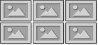
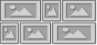
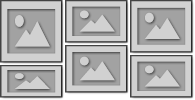
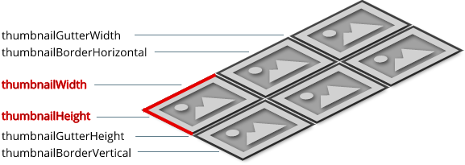
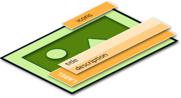
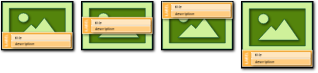
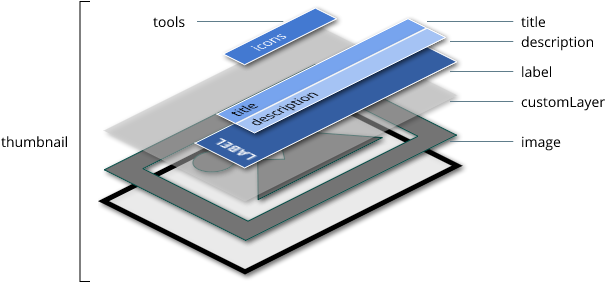
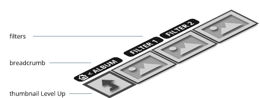
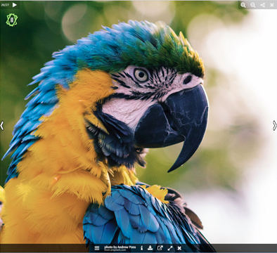

nanogallery2 is highly customizable and fully adjustable to suit your needs.
This page lists and describes the options accepted by nanogallery2 (everything is CaSe sEnSiTiVe).
Check also the documentation for content source and for API.
You may also use the visual BUILDER to quickly test some of the available options.
Settings are passed to the gallery on initialization:
Options are configured with the data-nanogallery2 attribute.
<div id="nanogallery2" data-nanogallery2='{
"userID": "34858669@N00",
"kind": "flickr",
"thumbnailHeight": 200,
"thumbnailWidth": "auto",
galleryDisplayMode: "rows",
...
}'>
</div>
Options are passed to the nanogallery2() function.
$("#nanogallery2").nanogallery2({
userID: '34858669@N00',
kind: 'flickr',
thumbnailHeight: 200,
thumbnailWidth: 'auto',
galleryDisplayMode: 'rows',
...
});
Configure the behaviour of the gallery.
| property | type | default | description | min version |
|---|---|---|---|---|
| galleryDisplayMode | string | 'fullContent' |
Possible values:
- 'fullContent': display all thumbnails at once - 'moreButton': display N rows and a button to show N more rows (see galleryDisplayMoreStep)
- 'pagination': display N rows and numbers/dots to paginate the gallery (see galleryMaxRows)
- 'rows': display maximum N rows (see galleryMaxRows). The number of remaining images is displayed over the last thumbnail.
|
1.0 |
| galleryDisplayMoreStep | integer | 2 |
Set the number of rows to display each time the "more button" is hit.
only for galleryDisplayMode: 'moreButton'
|
1.0 |
| galleryPaginationMode | string | 'rectangles' |
Display type in pagination mode:
- 'rectangles' - 'dots' - 'numbers' only for galleryDisplayMode: 'pagination'
|
1.0 |
| galleryMaxRows | integer | 2 |
Maximum number of rows to display
Only for galleryDisplayMode: 'rows' or galleryDisplayMode: 'pagination'.
Not supported if thumbnailHeight: 'auto'
|
1.0 |
| paginationVisiblePages | integer | 10 |
Maximum number of pagination items displayed
only for galleryDisplayMode: 'pagination' and galleryPaginationMode: 'numbers'
|
1.0 |
| paginationSwipe | boolean | true | Enables swipe gesture to display next/previous gallery page. | 1.0 |
| galleryLastRowFull | boolean | false |
When enabled, the last thumbnail's row will not be displayed if it doesn't fill the full width.
Only for grid and justified layouts. |
1.0 |
| gallerySorting | string | '' |
Sort order. No sorting by default.
Possible values: 'titleAsc', 'titleDesc', 'reversed', 'random' (=shuffle). |
1.0 |
| galleryMaxItems | integer | 0 | Maximum number of items per album. 0 = display all. | 1.0 |
| galleryResizeAnimation | boolean | true | Animate the moving of thumbnails to their new position when the gallery is resized. | 1.0 |
| thumbnailOpenImage | boolean | true | Pure gallery: lightbox is disabled. No image will be displayed. | 1.0 |
| galleryTheme colorScheme |
string object |
'dark' |
Gallery theme (thumbnails, navigation...).
Possible values: 'dark', 'light' Custom themes are supported. since v1.5, properties 'colorScheme' and 'galleryTheme' are synonymous |
1.0 |
| openOnStart | string |
Opens the specified album or display the specified image on library start.
Syntax: 'albumID' or 'albumID/imageID' |
1.0 | |
| thumbnailSelectable | boolean | false | Enable/disable the selection mode. A checkbox is displayed over each thumbnail to allow the user to select multiple thumbnails. | 1.0 |
| galleryRenderDelay | integer | 60 | Delay in ms before starting the gallery rendering. | 1.3 |
| thumbnailDisplayOutsideScreen | boolean | false | Display or hide thumbnails which are displayed outside of the screen (display may impact performances) | 1.2 |
| galleryDisplayTransition | string | 'none' |
Transition for displaing the gallery. Applied on the whole gallery.
Possible values: 'none', 'rotateX', 'slideUp' |
1.4 |
| galleryDisplayTransitionDuration | integer | 1000 | Duration of the gallery display transition, in milliseconds. | 1.4 |
3 basic layout styles are available: 'grid', 'justified' and 'cascading'
You don't need to specify the layout style, it is automatically set based on the size of the thumbnails.
- grid layout
Height and width is fixed and the same for all thumbnails.
Define the height and the width.
Example:thumbnailWidth: 300, thumbnailHeight: 200- justified layout
Width is calculated to respect the image ratio.
Set the special value'auto'tothumbnailWidth
Example:thumbnailWidth: 'auto', thumbnailHeight: 200- cascading layout (also called masonry layout)
Height is calculated to respect the image ratio.
Set the special value'auto'tothumbnailHeight
Example:thumbnailWidth: 300, thumbnailHeight: 'auto'
Configure the layout and the content of the thumbnails.

| property | type | default | description | min version |
|---|---|---|---|---|
| thumbnailWidth | integer string |
300 |
MANDATORY Thumbnails image width in pixels, or 'auto'. Use 'auto' for justified layout. |
1.0 |
| thumbnailHeight | integer string |
200 |
MANDATORY Thumbnails image height in pixels, or 'auto'. Use 'auto' for cascading/masonry layout. |
1.0 |
| thumbnailCrop | boolean | true |
If needed, thumbnail image will be cropped to avoid black borders (only for grid layout). |
1.0 |
| thumbnailCropScaleFactor | decimal | 1.5 |
This option is only for Google Photos and Flickr. Activating the crop option to avoid black image borders may scale the thumbnail image up. For this case and to avoid quality loss, the thumbnailCropScaleFactor will be applied to the thumbnail size to get a better image quality.
|
1.0 |
| thumbnailAlignment | string | 'center' |
Sets the thumbnail alignment.
Possible values: 'left', 'right', 'justified', 'center'. Note: the parameter 'thumbnailGutterWidth' is ignored when thumbnailAlignment: 'justified'.
|
1.0 |
| thumbnailGutterWidth | integer | 2 | Sets the horizontal gutter space between thumbnails. | 1.0 |
| thumbnailGutterHeight | integer | 2 | Sets the vertical gutter space between thumbnails. | 1.0 |
| thumbnailBorderHorizontal | integer | 2 | Set the left and right thumbnail border size. | 1.0 |
| thumbnailBorderVertical | integer | 2 | Set the top and bottom thumbnail border size. | 1.0 |
| thumbnailFeaturedKeyword | string | '*featured' |
Keyword to set the feature status of a thumbnail. The keyword is searched in the title and the description. If the keyword is found, the featured icon will be displayed over the thumbnail. |
1.0 |
| thumbnailDisplayInterval | integer | 15 | Interval in ms between the display of 2 thumbnails. | 1.0 |
| thumbnailDisplayTransition | string | 'fadeIn' |
Transition used to display each thumbnail.
Possible values: 'slideUp', 'slideDown', 'scaleUp', 'scaleDown', 'fadeIn', 'randomScale', 'flipDown', 'flipUp', 'slideDown2', 'slideUp2', 'slideRight', 'slideLeft', 'custom' note: some value accepts the syntax TRANISITION_VAL_EASING
where: - TRANISITION: the name of the display transition
- VAL: a start value for the animation
- EASING: transition easing formula name (optional)
Example: scaleDown_2_bounce
Details: - scaleDown: VAL is the start scale factor (default is 1.3) - scaleUp: VAL is the start scale factor (default is 0.6) - flipDown: VAL is the start distance in pixel (default is -100) - flipUp: VAL is the start distance in pixel (default is 100) - slideDown: VAL is the start distance in pixel (default is -50) - slideUp: VAL is the start distance in pixel (default is 50) - slideDown2: VAL is the start distance in pixel (default is -100) - slideUp2: VAL is the start distance in pixel (default is 100) - slideRight: VAL is the start distance in pixel (default is -150) - slideLeft: VAL is the start distance in pixel (default is 150) |
1.0 1.3 |
| thumbnailDisplayTransitionDuration | integer | 240 | Duration of the display transition. | 1.0 |
| thumbnailStacks | integer | 0 | Add N stacks behind each thumbnail. Usefull for thumbnails hover effects | 1.2 |
| thumbnailWaitImageLoaded | boolean | true | Wait until thumbails images are fully dwonloaded before displaying them smoothly. | 1.4 |
| thumbnailLastImgSliderDelay | integer | 2000 |
Image slider last displayed thumbnail.
Delay in ms between the display of images. Set it to 0 to disable it. Supported in grid layout with galleryDisplayMode set to 'rows' or to 'fullContent' with galleryLastRowFull enabled. Thumbnail image sizes must be defined. |
1.5 |
For a fully responsive gallery, you can define multiple thumbnail sizes for each image.
The used sized is dependant of the screen resolution.
5 screen resolutions are supported: XS (extra-small), SM (small), ME (medium), LA (large), XL (extra-large)
- Use the following syntax to assign multiple values to
thumbnailWidth:'defaultWidth XSw1 SMw2 MEw3 LAw4 XLw5'where w1 to w5 are the thumbnails widths for resolutions XS to XL.
- and for
thumbnailHeight'defaultHeight XSh1 SMh2 MEh3 LAh4 XLh5'where h1 to h5 are the heights for resolutions XS to XL.
- Not all values are mandatory. The default value will be used if a value is missing.
- The value auto is supported.
Examples:
- Grid layout:
thumbnailWidth: '300 XS100 LA400 XL500', thumbnailHeight: '200 XS80 LA250 XL350'- Grid and justified layout depending on the resolution:
thumbnailWidth: 'auto XS80 SM120', thumbnailHeight: '200 XS80 SM120'- Justified and cascading layout depending on the resolution:
thumbnailWidth: 'auto XS80 SM120', thumbnailHeight: '200 XSauto SMauto'
The label is composed by a title and a description. Set these settings to thethumbnailLabelparameter.

Exemple:
$("#myNanoGallery").nanogallery2({
...
thumbnailHeight: 200,
thumbnailWidth: 300,
thumbnailAlignment: 'center',
thumbnailLabel: { position: 'overImageOnBottom', hideIcons: true },
...
});
| property | type | default | description | min version |
|---|---|---|---|---|
| position | string | 'overImageOnBottom' |
Position of the label on the thumbnail.
Possible values: 'overImageOnBottom', 'overImageOnTop', 'overImageOnMiddle', 'onBottom'  |
1.0 |
| align | string | 'center' |
Horizontal text alignment.
Possible values: 'right', 'center', 'left' |
1.0 |
| display | boolean | true | Displays or hides the label (title and description). | 1.0 |
| displayDescription | boolean | false | Displays or hides the description. | 1.0 |
| align | string | 'center' |
Horizontal text alignment.
Possible values: 'right', 'center', 'left' |
1.0 |
| hideIcons | boolean | true | Hides or displays the icons beside the title. | 1.0 |
| titleMaxLength | integer | 0 | Title maximum length to display. | 1.0 |
| titleMultiLine | boolean | false | Title can be multiline (not supported with position:'onBottom'). |
1.0 |
| title | string |
Variable to set the image title (undescores are replaced by spaces).
Possible values: - '%filename': use the filemanme without path - '%filenameNoExt': use the filemanme without path and without extension |
1.0 | |
| titleFontSize | string |
Set the title font size. Example: titleFontSize: '2em'
|
1.0 | |
| descriptionMaxLength | integer | 0 | Description maximum length to display. | 1.0 |
| descriptionMultiLine | boolean | false | Description can be multiline (not supported with position:'onBottom'). |
1.0 |
| descriptionFontSize | string |
Set the description font size. Example: descriptionFontSize: '0.8em'
|
1.0 | |
| 1.0 |
Hover effects are triggered on mouse over or on touch-tap. They are confugured with thethumbnailHoverEffect2parameter.

You can set one or multiple presets to the thumbnailHoverEffect2 with the syntax thumbnailHoverEffect2: 'preset1|preset2|...'
Possible presets:
Usage example: thumbnailHoverEffect2: 'borderDarker|labelAppear75'
For a full control of the effects, use the syntax thumbnailHoverEffect2: 'effect1|effect2|...'
where effectN has the syntax [element]_[property]_[fromValue]_[toValue]
label_backgroundColor_rgba(255,255,255,0.80)_rgba(255,255,255,0.01)
transform-function.
image_rotateZ_0deg_15deg
visual effect.
'image_grayscale_0%_100%
Some examples:
thumbnailHoverEffect2: 'image_sepia_100%_1%''image_blur_0.00px_2.00px''image_rotateZ_0deg_15deg''image_grayscale_0%_100%'image_scale_1.00_1.20image_scale_1.20_1.00'label_backgroundColor_rgba(255,255,255,0.80)_rgba(255,255,255,0.01)'customlayer_backgroundColor_rgba(160,0,0,0.0)_rgba(160,0,0,0.5)tools_opacity_1_0.5image_contrast_1_4image_brightness_1_2thumbnailHoverEffect2:'image_grayscale_0%_100%|image_rotateZ_0deg_15deg'thumbnailBuildInit2: : 'init1|init2|...' where initN has the syntax: [element]_[property]_[Value].
thumbnailBuildInit2: 'image_scale_1.20'
Fine tuning settings: duration, delay, easing, back duration, back delay, beack easing, hoverin, hoverout, first keyframe
syntax:
thumbnailHoverEffect2: {
name: '[effectName]',
delay: 0,
duration: 400,
easing: 'easeOutQuart',
delayBack: 0,
durationBack: 300,
easingBack: 'easeOutQuart',
hoverin: true,
hoverout: true,
firstKeyframe: true
}
thumbnailHoverEffect2: { name: 'imageBlurOn', duration: 800, easing: 'easeInCubic', delayBack: 0, durationBack: 300, easingBack: 'easeOutQuart' }thumbnailHoverEffect2: { name: 'image_rotateZ_0deg_15deg', duration: 800, durationBack: 500}thumbnailHoverEffect2: [{ name: 'image_scale_1.00_1.20', duration: 500}, { name: 'image_rotateZ_0deg_15deg', delay: 500}]
Stacks can be added behind thumbnails to create nice hover effects. Their color is defined in the galleryTheme.
Use thumbnailStacks and thumbnailL1Stacks to define then number of stacks.
The thumbnail animation is applied to the stack, but with a percent value.
For example, if thumbnailStacksRotateX is set to 0.4, then the 1st stack will have a percent of 0.6 applied to the rotationX value of the thumbnail.
For the second stack, the percent will be 0.2, for the third one it will be -0,2, and so on.
Possible parameters to set these percents: 'thumbnailStacksTranslateX', 'thumbnailStacksTranslateY', 'thumbnailStacksTranslateZ', 'thumbnailStacksRotateX', 'thumbnailStacksRotateY', 'thumbnailStacksRotateZ', 'thumbnailStacksScale'
Each corner of one thumbnail has a toolbar. You can customize each of these toolbars. Customization is specific for albums and for images.
| property | type | default | description | min version |
|---|---|---|---|---|
| thumbnailToolbarImage | object |
Image toolbars Syntax: thumbnailToolbarImage: { topLeft:'', topRight: '', bottomLeft: '', bottomRight: ''}Possible tools: 'select', 'share', 'featured', 'download', 'cart', 'info' Default: thumbnailToolbarImage : { topLeft: 'select', topRight : 'featured' }
|
1.0 | |
| thumbnailToolbarAlbum | object |
Album toolbars Syntax: thumbnailToolbarAlbum: { topLeft:'', topRight: '', bottomLeft: '', bottomRight: ''}Possible tools: 'select', 'share', 'counter', 'counter2', 'cart' Default: thumbnailToolbarAlbum : { topLeft: 'select', topRight : 'counter' }
|
1.0 |
Configure how the user can navigate in albums, filter the thumbnails based on tags, and the touch/tap handling.

| property | type | default | description | min version |
|---|---|---|---|---|
| displayBreadcrumb | boolean | true | Display the breadcrumb for navigation in albums. | 1.0 |
| breadcrumbOnlyCurrentLevel | boolean | true | Display only the name of the current album. | 1.0 |
| breadcrumbAutoHideTopLevel | boolean | true | No breadcrumb on albums first navigation level. | 1.0 |
| breadcrumbHideIcons | true | Hide or display breadcrumb's icons. | 1.0 | |
| galleryFilterTags | boolean string |
false |
Display tags to filter the thumbnails.
Possible values: - false: disabled - true: enabled - 'title': extract the tags from the title (string starting with @) - 'description': extract the tags from the description (string starting with @) |
1.0 |
| thumbnailLevelUp | boolean | false | Display one thumbnail to navigate in the parent album. | 1.0 |
| locationHash | boolean | true |
Enables hash tracking.
This will activate browser Back/Forward navigation (browser history support) and Deep Linking of images and photo albums. Must be enabled to allow sharing of images/albums. Note: only one gallery per HTML page should use this feature. |
1.0 |
| touchAnimation | boolean | true |
Enables thumbnail hover animation on touch event.
The user must tap a thumbnail twice to show the image or open a album. |
1.0 |
| touchAutoOpenDelay | integer | 0 |
When a user touch a thumbnail, delay in ms before opening the touched thumbnail.
Particular values: -1= disabled (user needs to tap twice to open the thumbnail), 0= automatic (the library will calculate automatically the delay). Note: the parameter is ignored when touchAnimation=false.
|
1.0 |
| navigationFontSize | string |
Define the font size for the navigation (breadcrumb and filters). Example: navigationFontSize: '1.2em'
|
1.0 | |
| 1.0 |
Settings can be defined specificaly for the first album level (root level) and for the other ones.
Default settings are used for all album levels (including the first one).
Example:
To use a grid layout for the first level, and a justified layout for all other levels
thumbnailHeight: 200, thumbnailWidth: 'auto',
thumbnailL1Height: 300, thumbnailL1Width: 300
view demo on codepen
| property | min version |
|---|---|
| thumbnailL1Height, thumbnailL1Width | 1.0 |
| thumbnailL1Crop | 1.0 |
| thumbnailL1Label | 1.0 |
| thumbnailL1HoverEffect2 | 1.0 |
| galleryL1DisplayMode | 1.0 |
| galleryL1MaxRows | 1.0 |
| galleryL1LastRowFull | 1.0 |
| galleryL1FilterTags | 1.0 |
| galleryL1MaxItems | 1.0 |
| galleryL1Sorting | 1.0 |
| thumbnailL1Stacks | 1.2 |
| thumbnailL1GutterWidth, thumbnailL1GutterHeight | 1.2 |
| thumbnailL1DisplayTransition | 1.3 |
| thumbnailL1DisplayTransitionDuration | 1.3 |
| thumbnailL1DisplayInterval | 1.3 |
| galleryDisplayTransition | 1.4 |
| galleryDisplayTransitionDuration | 1.4 |
The lightbox is used to display images in full size.

All available tools can be displaued in each of the 3 toolbar.
Possible tools: 'previousButton', 'pageCounter', 'nextButton', 'playPauseButton', 'fullscreenButton', 'infoButton', 'linkOriginalButton', 'closeButton', 'downloadButton', 'label', 'customN'
To add custom elements in a toolbar, use the label customN, where N is an integer (e.g. custom1, custom2...).
| property | type | default | description | min version |
|---|---|---|---|---|
| imageTransition | string | 'swipe' |
Animation from one image to the next one.
Possible values: 'slideAppear', 'swipe'. |
1.0 |
| slideshowAutoStart | boolean | false | Starts automatically the slideshow when an image is displayed. | 1.0 |
| slideshowDelay | integer | 3000 | Duration of the photo display in slideshow mode (in ms). | 1.0 |
| viewerHideToolsDelay | integre | 3000 | Delay of inactivity before hidding the tools and labels. | 1.3 |
| viewerFullscreen | boolean | false | Displays images in fullscreen (on supported browser). | 1.0 |
| viewerToolbar | object | Display options for the light main toolbar. | 1.0 | |
| viewerToolbar.display | boolean | true | Displays/hides the main toolbar. | 1.0 |
| viewerToolbar.position | string | 'bottomOverImage' | Vertical position. Possible values: 'top', 'topOverImage', 'bottom', 'bottomOverImage' |
1.0 |
| viewerToolbar.align | string | 'center' | Horizontal alignement. Possible values: 'left', 'right', 'center' |
1.0 |
| viewerToolbar.fullWidth | boolean | false | Toolbar is as width as the screen. | 1.0 |
| viewerToolbar.autoMinimize | integer | 800 | Breakpoint for switching between minimized and standard toolbar. If the width is lower than this value, the toolbar is switched to minimized. |
1.0 |
| viewerToolbar.standard | string |
List of items to display in the standard toolbar (comma separated). For this toolbar, 'minimizeButton' is additionally available. Default value: viewerToolbar: { standard :'minimizeButton, label'} |
1.0 | |
| viewerToolbar.minimized | string |
List of items to display in the minimized toolbar (comma separated). For this toolbar, 'minimizeButton' is additionally available. Default value: viewerToolbar: { standard :'minimizeButton, infoButton, downloadButton, linkOriginalButton, label, fullscreenButton'} |
1.0 | |
| viewerTools | object | Tools positionned in the corners. | 1.0 | |
| viewerTools.topLeft | string |
Toolbar positioned in the top left corner. Default value: viewerTools : { topLeft: 'pageCounter, playPauseButton'}
|
1.0 | |
| viewerTools.topRight | string |
Toolbar positioned in the top right corner. Default value: viewerTools : { topLeft: 'zoomButton, shareButton, closeButton'}
|
1.0 | |
| viewerTheme colorSchemeViewer |
string object |
'dark' |
Image display theme.
Possible values: 'dark', 'light', 'border'. Custom themes are supported. since v1.5, properties 'colorSchemeViewer' and 'viewerTheme' are synonymous |
1.0 |
| viewerDisplayLogo | boolean | false | To display a logo over the image. | 1.0 |
| viewerImageDisplay | string |
Manage the image display zoom factor.
Possible values: - '': no not apply any zoom factor - 'bestImageQuality': display images smaller for a better quality (on high DPI screens like Retina, etc.) - 'upscale': upscale image to screen size |
1.5 |
All icons used in the gallery can be customized. By default, an icon font is used.
Example: replace the default album icon with a red one from Font Awesome:
icons.thumbnailAlbum: '<i style="color:#e00;" class="fa fa-search-plus"></i>'
| property | type | default | description | min version |
|---|---|---|---|---|
| icons.thumbnailAlbum | string | '<i class="nGY2Icon icon-folder-empty"></i>' | Thumbnail album icon | 1.0 |
| icons.thumbnailImage | string | '<i class="nGY2Icon icon-picture"></i>' | Thumbnail image icon | 1.0 |
| icons.breadcrumbAlbum | string | '<i class="nGY2Icon icon-folder-empty"></i>' | Breadcrum album icon | 1.0 |
| icons.breadcrumbHome | string | '<i class="nGY2Icon icon-home"></i>' | Breadcrumb home icon | 1.0 |
| icons.breadcrumbSeparator | string | '<i class="nGY2Icon icon-left-open"></i>' | Breadcrumb separator icon | 1.0 |
| icons.breadcrumbSeparatorRtl | string | '<i class="nGY2Icon icon-right-open"></i>' | Breadcrumb separator RTL icon | 1.0 |
| icons.navigationFilterSelected | string | '<i style="color:#bff;" class="nGY2Icon icon-toggle-on"></i>' | Navigation - thumbnail filter - selected icon | 1.0 |
| icons.navigationFilterUnselected | string | '<i class="nGY2Icon icon-toggle-off"></i>' | Navigation - thumbnail filter - unselected icon | 1.0 |
| icons.navigationFilterSelectedAll | string | '<i class="nGY2Icon icon-toggle-off"></i>' | Navigation - thumbnail filter - unselect all icon | 1.0 |
| icons.thumbnailSelected | string | '<i class="nGY2Icon icon-ok-circled"></i>' | Thumbnail selection - selected icon | 1.0 |
| icons.thumbnailUnselected | string | '<i class="nGY2Icon icon-circle-empty"></i>' | Thumbnail selection - unselected icon | 1.0 |
| icons.thumbnailFeatured | string | '<i style="color:#ffa;" class="nGY2Icon icon-star"></i>' | Thumbnail - featured icon | 1.0 |
| icons.thumbnailCounter | string | '<i class="nGY2Icon icon-picture"></i>' | Thumbnail - image icon | 1.0 |
| icons.thumbnailShare | string | '<i class="nGY2Icon icon-share"></i>' | Thumbnail - share icon | 1.0 |
| icons.thumbnailDownload | string | '<i class="nGY2Icon icon-download"></i>' | Thumbnail - download icon | 1.0 |
| icons.thumbnailInfo | string | '<i class="nGY2Icon icon-ngy2_info2"></i>' | Thumbnail - info icon | 1.0 |
| icons.thumbnailCart | string | '<i class="nGY2Icon icon-basket"></i>' | Thumbnail - add to shopping cart icon | 1.0 |
| icons.thumbnailDisplay | string | '<i class="nGY2Icon icon-ngy2_zoom_in2"></i>' | Thumbnail - display image icon | 1.0 |
| icons.thumbnailCustomTool[1..10] | string | 'T1..T10' | Thumbnail - custom tool 1 to 10 | 1.1 |
| icons.thumbnailAlbumUp | string | '<i style="font-size: 3em;" class="nGY2Icon icon-level-up"></i>' | Thumbnail navigation - album up icon | 1.0 |
| icons.paginationNext | string | '<i class="nGY2Icon icon-right-open"></i>' | Gallery pagination - next page icon | 1.0 |
| icons.paginationPrevious | string | '<i class="nGY2Icon icon-left-open"></i>' | Gallery pagination - previous page icon | 1.0 |
| icons.galleryMoreButton | string | '<i class="nGY2Icon icon-picture"></i> <i class="nGY2Icon icon-right-open"></i>' | close button icon | 1.0 |
| icons.buttonClose | string | '<i class="nGY2Icon icon-ngy2_close2"></i>' | close button icon | 1.0 |
| icons.viewerPrevious | string | '<i class="nGY2Icon icon-ngy2_chevron-left"></i>' | Lightbox - icon for previous image (toolbar) | 1.0 |
| icons.viewerNext | string | '<i class="nGY2Icon icon-ngy2_chevron-right"></i>' | Lightbox - icon for next image (toolbar) | 1.0 |
| icons.viewerImgPrevious | string | '<i class="nGY2Icon icon-ngy2_chevron_left3"></i>' | Lightbox - icon for previous image (on the left side of the image) | 1.0 |
| icons.viewerImgNext | string | '<i class="nGY2Icon icon-ngy2_chevron_right3"></i>' | Lightbox - icon for next image (on the right side of the image) | 1.0 |
| icons.viewerDownload | string | '<i class="nGY2Icon icon-ngy2_download2"></i>' | Lightbox - icon image download (toolbar) | 1.0 |
| icons.viewerToolbarMin | string | '<i class="nGY2Icon icon-ellipsis-vert"></i>' | Lightbox - icon for minimized toolbar | 1.0 |
| icons.viewerToolbarStd | string | '<i class="nGY2Icon icon-menu"></i>' | Lightbox - icon for maximized toolbar | 1.0 |
| icons.viewerPlay | string | '<i class="nGY2Icon icon-play"></i>' | Lightbox - icon play - to start the slideshow (toolbar) | 1.0 |
| icons.viewerPause | string | '<i class="nGY2Icon icon-pause"></i>' | Lightbox - icon pause - to stop the slideshow (toolbar) | 1.0 |
| icons.viewerFullscreenOn | string | '<i class="nGY2Icon icon-resize-full"></i>' | Lightbox - icon to switch on fullscreen (toolbar) | 1.0 |
| icons.viewerFullscreenOff | string | '<i class="nGY2Icon icon-resize-small"></i>' | Lightbox - icon to switch off fullscreen (toolbar) | 1.0 |
| icons.viewerZoomIn | string | '<i class="nGY2Icon icon-ngy2_zoom_in2"></i>' | Lightbox - icon zoom in (toolbar) | 1.0 |
| icons.viewerZoomOut | string | '<i class="nGY2Icon icon-ngy2_zoom_out2"></i>' | Lightbox - icon zoom out (toolbar) | 1.0 |
| icons.viewerLinkOriginal | string | '<i class="nGY2Icon icon-ngy2_external2"></i>' | Lightbox - icon link to original image (toolbar) | 1.0 |
| icons.viewerInfo | string | '<i class="nGY2Icon icon-ngy2_info2"></i>' | Lightbox - icon infobox (toolbar) | 1.0 |
| icons.viewerShare | string | '<i class="nGY2Icon icon-ngy2_share2"></i>' | Lightbox - icon share link (toolbar) | 1.0 |
| icons.user | string | '<i class="nGY2Icon icon-user"></i>' | Lightbox - icon author (infobox) | 1.0 |
| icons.location | string | '<i class="nGY2Icon icon-location"></i>' | Lightbox - icon location on Google Maps (infobox) | 1.0 |
| icons.config | string | '<i class="nGY2Icon icon-wrench"></i>' | Lightbox - icon config for EXIF (infobox) | 1.0 |
| icons.viewerCustomTool[1..10] | string | 'T1..T10' | Lightbox - custom tool 1 to 10 | 1.1 |
| icons.shareFacebook | string | '<i style="color:#3b5998;" class="nGY2Icon icon-facebook-squared"></i>' | Lightbox - icon Facebook (share popup) | 1.0 |
| icons.shareTwitter | string | '<i style="color:#00aced;" class="nGY2Icon icon-twitter-squared"></i>' | Lightbox - icon Twitter (share popup) | 1.0 |
| icons.shareGooglePlus | string | '<i style="color:#dd4b39;" class="nGY2Icon icon-gplus-squared"></i>' | Lightbox - icon Google plus (share popup) | 1.0 |
| icons.shareTumblr | string | '<i style="color:#32506d;" class="nGY2Icon icon-tumblr-squared"></i>' | Lightbox - icon Tumblr (share popup) | 1.0 |
| icons.sharePinterest | string | '<i style="color:#cb2027;" class="nGY2Icon icon-pinterest-squared"></i>' | Lightbox - icon Pinterest (share popup) | 1.0 |
| icons.shareVK | string | '<i style="color:#3b5998;" class="nGY2Icon icon-vkontakte"></i>' | Lightbox - icon Pinterest (share popup) | 1.3 |
| icons.shareMail | string | '<i style="color:#555;" class="nGY2Icon icon-mail-alt"></i>' | Lightbox - icon mail-to (share popup) | 1.0 |
Themes allow you to customize some elements without changing the CSS file.
Two separated themes can be set: one for the gallery (galleryTheme), and one for the lightbox (viewerTheme).
For each one, 2 templates can be used:dark(default valude) andlight. You can define your own customized theme.
Example:
To change the background and the boder color of the thumbnails
1. define one theme:var myCS= { thumbnail : { background: '#F00', borderColor: '#F00' } };
2. assign it to the gallery:galleryTheme: myCS
Gallery theme format (with default values):
{
navigationBar: { background: 'none', borderTop: '', borderBottom: '', borderRight: '', borderLeft: '' },
navigationBreadcrumb: { background: '#111', color: '#fff', colorHover: '#ccc', borderRadius: '6px' },
navigationFilter : { color: '#ddd', background: '#111', colorSelected: '#fff', backgroundSelected: '#111', borderRadius: '6px' },
thumbnail: { background: '#444', backgroundImage: 'linear-gradient(315deg, #111 0%, #557 90%)', borderColor: '#000', labelOpacity : 1, labelBackground: 'rgba(34, 34, 34, 0)', titleColor: '#eee', titleBgColor: 'transparent', titleShadow: '', descriptionColor: '#ccc', descriptionBgColor: 'transparent', descriptionShadow: '', stackBackground: '#aaa' },
thumbnailIcon: { padding: '5px', color: '#fff' },
pagination: { background: '#111', backgroundSelected: '#666', color: '#fff', borderRadius: '2px', shapeBorder: '3px solid #666', shapeColor: '#444', shapeSelectedColor: '#aaa'}
}
Lightbox theme format (with default values):
{
background: '#000', imageBorder: 'none', imageBoxShadow: 'none',
barBackground: 'rgba(4, 4, 4, 0.7)', barBorder: '0px solid #111', barColor: '#eee', barDescriptionColor: '#aaa'
}
nanogallery2 comes with an interesting set of new features that should streamline your development experience.
Due to many enhancements, nanogallery2 is not 100% compatible with nanoGALLERY.
In particular, the thumbnail hover effects engine has been rewritten: the optionthumbnailHoverEffectis now replaced bythumbnailHoverEffect2.
Here's the list of depreciated and no more supported options.
| property | comment |
|---|---|
| thumbnailHoverEffect | replaced by thumbnailHoverEffect2 |
| picasaUseUrlCrossDomain | no more needed |
| albumList | replaced by albumList2 |
| galleryToolbarWidthAligned | |
| galleryToolbarHideIcons | Replaced by breadcrumbHideIcons. Each icon can now be customized with the icons |
| galleryFullpageButton | |
| galleryFullpageBgColor | |
| galleryRenderStep | |
| itemsSelectable keepSelection showCheckboxes checkboxStyle selectMode |
thumbnail selection is now managed by the thumbnailSelectable option. |
| paginationMaxLinesPerPage | replaced by galleryMaxRows and galleryL1MaxRows |
| paginationDots | replaced by galleryPaginationMode |
| albumMax | replaced by galleryMaxItems and galleryL1MaxItems - ignored for self hosted images. |
| photoSorting albumSorting dataSorting |
replaced by gallerySorting and galleryL1Sorting |
| thumbnailLazyLoad thumbnailLazyLoadTreshold lazyBuild lazyBuildTreshold |
managed automatically |
| maxWidth | |
| thumbnailAdjustLastRowHeight | is now the standard behaviour |
| fnChangeSelectMode | use fnThumbnailSelection instead. |
| fnThumbnailHoverResize | |
| setUnselectedItems setSelectedItems |
use itemsSetSelectedValue instead. |
| getSelectedItems | use itemsSelectedGet instead. |
| paginationPreviousPage paginationNextPage paginationCountPages paginationGotoPage |
|
| galleryCountImages moveToNextAlbum moveToPreviousAlbum |
|
| viewerToolbar.style |
| callbacks | comment |
|---|---|
| fnViewerInfo | No more used. Please replace with toolbar custom buttons (fnImgToolbarCustInit, fnImgToolbarCustClick) |
| fnInitGallery | replaced and enhanced by fnGalleryRenderStart and fnGalleryRenderEnd |
| API methods | comment |
|---|---|
| getItems |
Instead, use data to get a pointer to an array containing all the items.
Example: $('#your_nanogallery2').nanogallery2('data').items;
|
| getItem | replaced by: $('#your_nanogallery2').nanogallery2('data').items[item_index]; |
| getItemsIndex | no more needed |
| refreshSize | refresh |
Recommandations / Performances / FAQ
Thumbnails hover effects:
By default, HTML tags cannot be used in titles and descriptions of images.
To enable HTML tags, set the optionallowHTMLinData: true.
Be aware that this could lead to XSS (cross site scripting) vulnerability.
Firefox 6+ - Chrome 16+ - Edge 13+ - IE 10+ - Opera 12.1+ - Yandex 14.12+ - iPhone 5+ / iOS 6+ - Safari 6.2+
(some features may not be available on every platform).
Testing services provided by BrowserStack